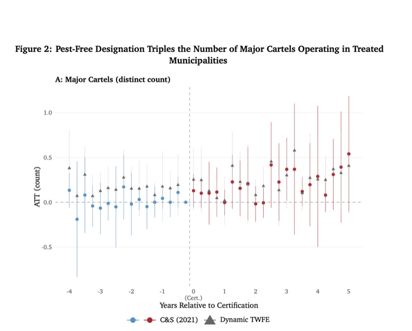
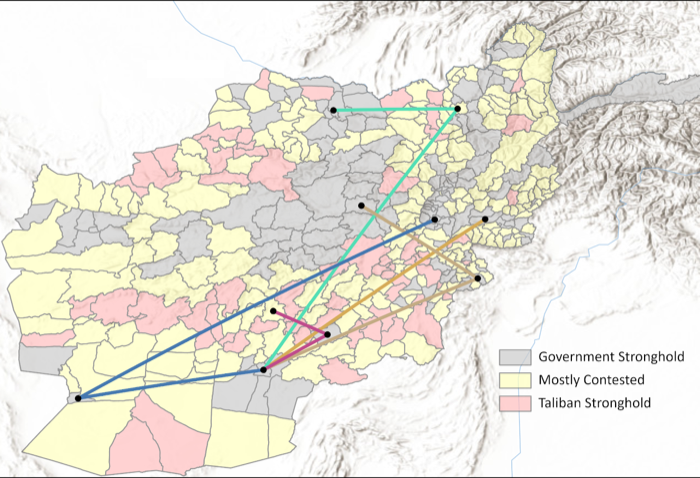
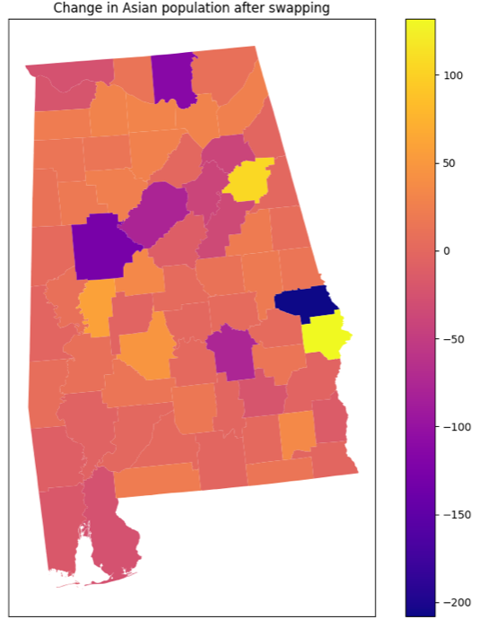
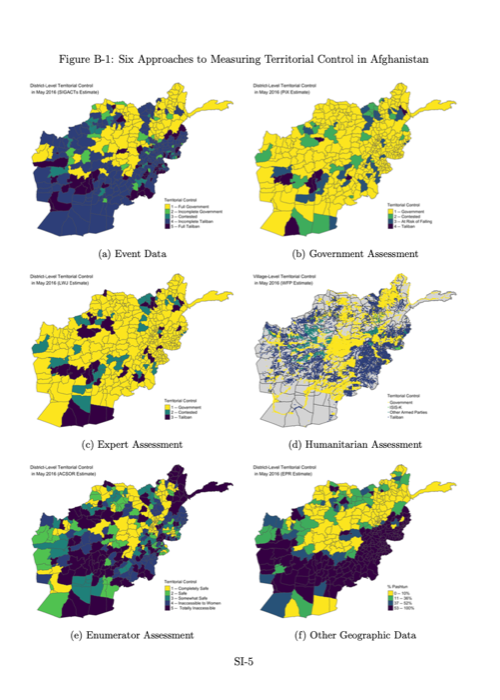
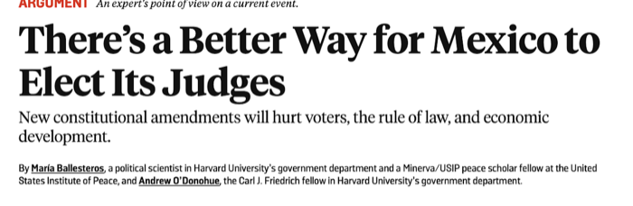

Research
Ripe for Entry: How Export Certification Leads Cartels to Replace Local Gangs and Reduce Violence
Working paper. Draft available upon request.
Senator Charles Sumner Dissertation Prize
Abstract
Institutional arrangements in legal markets can reshape the strategic behavior of the criminal organizations that extract from them. I examine how regulatory institutions that certified municipalities in Michoacán, Mexico to export avocados to the United States reshaped cartel behavior. I provide causally identified evidence that export certification incentivized cartel entry and led to an increase in cartel-related criminal activity, but also tied rents to long-term investment, stability, and regulatory compliance, leading to a reduction in the lethal violence often associated with inter-cartel competition. Positive price shocks affected violence before certification but not after, suggesting that once territorial rents depend on long-term production and institutional compliance, cartels suppress violence to preserve order.

Displacement as State-Building: Mobile Phone Evidence from the Taliban's Return to Power
Working paper. Draft available upon request.
Senator Charles Sumner Dissertation Prize
Department of Government Research Award in Race, Ethnicity, Migration and Politics
Abstract
How do victorious insurgents build states after civil war? I argue that forced displacement is a key strategy for rebels seeking to consolidate power in areas previously controlled by dissidents: rebel regimes evict politically risky populations from economically valuable areas to destabilize rivals, accumulate resources, and reward loyalists. Crucially, these evictions are tempered where local populations can disrupt vital economic production. Using a novel dataset of weekly district-to-district population flows constructed from cellphone metadata covering more than 7 million users, I provide evidence that after their victory in Afghanistan in 2021, the Taliban used forced displacement strategically to remove politically threatening populations from valuable areas while limiting evictions where local labor and production were economically essential.

Evaluating the Impacts of Swapping on the US Decennial Census
Published in the Proceedings of the ACM Symposium on Computer Science and Law, 2025
Abstract
Disclosure avoidance techniques distort publicly released U.S. census data in ways that matter for social science research. We reconstruct the confidential U.S. Census Bureau swapping algorithm from public documentation and analyze its statistical effects, comparing the biases it introduces to those introduced by differential privacy. Our tools help researchers identify and adjust for these distortions in applied work.

Territorial Control in Civil Wars
Revise and resubmit, World Politics
Senator Charles Sumner Dissertation Prize
Abstract
Territorial control is one of the foundational concepts of conflict research. We trace how the concept has evolved across three generations of scholarship on civil war and identify key conceptual and measurement challenges for future work, with a focus on rigorous causal inference and measurement strategies.

Works in Progress
Securing Property Rights as a Tool for Equitable Peace-Building: Evidence from Colombia's Land Tenure Formalization and Restitution Efforts
Work in progress
Abstract
We examine the effects of state-led land redistribution during the post-conflict period on development and conflict reoccurrence. Leveraging quasi-random variation in municipal assignment under Colombia's 2010–2011 Land Restitution Law, we evaluate how returning land, especially to women, shapes outcomes including violence, economic inclusion, and health, drawing on an administrative panel that tracks conflict victims in space and time.
The Politics of Cartel Competition: Evidence from the Mexican Drug War
Work in progress
Abstract
While drug trafficking organizations are often modeled as profit-maximizing firms that compete through violence, empirical evidence reveals significant regional variation: some areas suffer intense conflict while others sustain stable multi-cartel coexistence. Drawing on rationalist theories of war, I develop a formal model linking violence to features of the local economy, emphasizing how demand elasticity to violence shapes cartel strategy. In tourist destinations, for example, cartels often avoid violence to protect the value of an expanding tourism market.
Mobile Phone Data Reveals the Immediate Effects of Civil War Termination on Migration Decisions: An Examination of the Taliban's Victory
Work in progress
Abstract
Internal displacement during and after conflict is one of the greatest predictors of long-term poverty and vulnerability, yet high-frequency evidence on how war termination reshapes migration is scarce. Drawing on the universe of user-level cellphone metadata from Afghanistan's largest telecom network, this project measures how the end of large-scale fighting in 2021 immediately changed individual migration decisions, providing the first measure of internal displacement that maintains consistent measurement standards across both wartime and postwar periods.
Policy Writing
There's a Better Way for Mexico to Elect Its Judges
Foreign Policy English Version Spanish Version
Press coverage: The New York Times, "Will Voting for Judges Help or Hurt Mexico's Democracy?"

Teaching
Barriers to Peace: Organized Violence as an Obstacle to Development
Comparative Politics of Latin America
Math Prefresher for PhD Students
International Political Economy
Quantitative Analysis and Empirical Methods
Diplomacy and International Relations
Quantitative Analysis for Public Policy
Nominated as the Harvard Government Department's 2025–26 Pedagogy Fellow.
Contact
Email. maria_ballesteros@brown.edu
Office. Watson School of International and Public Affairs, Brown University, 111 Thayer Street, Providence, RI 02912